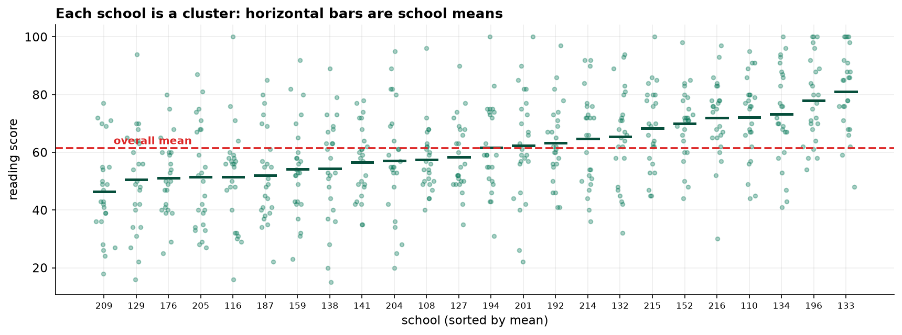
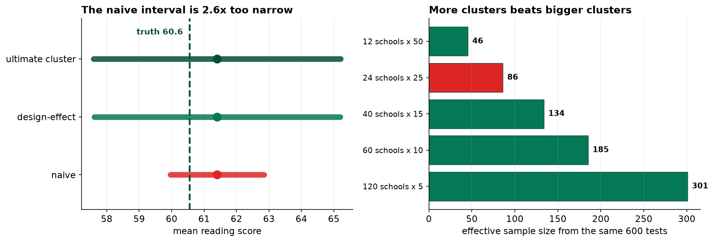

Six hundred students sat a reading assessment. Every one was marked, and the estimate they support is about as precise as eighty-six students drawn at random would have given. This chapter is about where the other five hundred went.
With an ICC of 0.25 and 25 students per school, the design effect is 6.93: 597 students carry the precision of 86. Ignoring the clustering understates the standard error by a factor of 2.6, and an interval labelled 95 percent then covers the truth 57 percent of the time.
The Frame Chose the Design
The target population is every Year 6 student in the district's 120 state schools, 8,184 of them. There is no central list of students. There is a complete list of schools, with roll counts.
That settles it before any statistical argument begins. Students can only be reached through schools, so the design is a two-stage cluster sample: draw 24 schools from the 120, then draw 25 Year 6 students inside each. Six hundred assessments in twenty-four buildings.
Testing 600 students spread across 24 schools is affordable. Testing 600 students scattered across all 120 schools would cost several times as much in travel, invigilation and scheduling, for exactly the same number of scripts. That trade is entirely reasonable.
What is not reasonable is taking the cheap design and then analyzing it as
though it had been the expensive one. Every standard error in this chapter has to know that
school_id is not a label but the sampling unit.
Look at the Clusters First
The whole question is whether students in the same school resemble each other. A picture answers it faster than any statistic. Cleaning removed two duplicates, one impossible score of 155 and two students absent on test day, leaving 597 students across 24 schools.

The Design Effect, and the Bill
| Quantity | Value | Meaning |
|---|---|---|
| Mean square between schools | 2,256.20 | Variation from school to school |
| Mean square within schools | 244.71 | Variation from student to student |
| Intra-class correlation | 0.2484 | 25% of variation is between schools |
| Design effect | 6.93 | 1 + (24.9 − 1) × 0.2484 |
| Effective sample size | 86.1 | 597 students, the precision of 86 |
An ICC of 0.25 is high and entirely ordinary for schools, because intake, teaching and neighborhood all travel together. The consequence is stark: roughly 510 of the 597 scripts we marked added almost nothing to the estimate.
Three Standard Errors for One Number
| Method | SE | 95% CI | Covers truth? |
|---|---|---|---|
| Naive, assumes independence | 0.735 | 59.97 to 62.85 | yes, narrowly |
| Design-effect corrected | 1.934 | 57.61 to 65.20 | yes |
| Ultimate cluster (24 school means) | 1.942 | 57.60 to 65.21 | yes |
The two corrected methods agree to the third decimal, which is reassuring because they get there differently. The ultimate-cluster estimator discards the individual students entirely and treats the 24 school means as the data. That it lands within a hair of the design-effect correction confirms the underlying fact: this study really carries 24 independent pieces of information, not 597.

Does a 95 Percent Interval Cover 95 Percent of the Time?
One sample cannot answer that. A thousand can. The real study cannot be re-run, but a population with the same variance structure the sample just revealed can be built and the design re-run on it as often as we like.
An interval labelled 95 percent contains the truth about 57 percent of the time when the clustering is ignored. Two studies in five would publish a confidence interval that does not contain the value they set out to estimate, while stating a 5 percent error rate.
Nothing about the correction is exotic. It is one multiplication by the square root of the design effect. The cost of skipping it is a real error rate eight times the stated one.
The Question to Ask Before Fieldwork
The design effect depends on the cluster size, and cluster size is a choice. For the same 600 students, visiting more schools and testing fewer in each buys back most of the lost precision.
| Design (same 600 tests) | Design effect | Effective n | Relative precision |
|---|---|---|---|
| 12 schools × 50 students | 13.17 | 45.6 | 0.73× |
| 24 schools × 25 students | 6.96 | 86.2 | 1.00× (used) |
| 40 schools × 15 students | 4.48 | 134.0 | 1.25× |
| 60 schools × 10 students | 3.24 | 185.5 | 1.47× |
| 120 schools × 5 students | 1.99 | 301.0 | 1.87× |
More clusters beats bigger clusters, every time, on statistical grounds alone. Sixty schools of ten students would have delivered an effective sample of 186 rather than 86, from exactly the same number of assessments.
The study did not do that because of cost, and that is a legitimate answer. But it is a decision to be made deliberately with the precision consequence in front of you. The right time to compute a design effect is while planning the fieldwork, not while writing up.
Proportions Cluster Too
260 of the 597 students met the expected standard, 43.6 percent against a true 41.4 percent. The correction applies exactly as before, and nothing in standard survey software will apply it for you.
| Interval | 95% CI | Width |
|---|---|---|
| Naive Wilson | 39.6% to 47.6% | 7.9 points |
| Cluster-corrected | 34.1% to 53.0% | 18.9 points |
The ICC for the binary outcome is 0.196 and the design effect 5.68, so the honest interval is more than twice as wide. Wilson intervals, exact binomial intervals and every other textbook formula for a proportion assume independent observations. Applied to a cluster sample they are too narrow by the same square-root-of-the-design-effect factor, and they will do it silently.
What to Watch
- Consent is given by the cluster, not the student. A head teacher who declines removes 25 students at once, and schools do not decline at random. One refusal here is worth 25 in a simple random sample, both statistically and in terms of who ends up unrepresented.
- Small schools are over-sampled by this design. Twenty-five students from a roll of 38 is two thirds of the school; the same 25 from a roll of 95 is a quarter. Selection probabilities differ by school size, and a fully weighted analysis would account for it. This one does not, which is a simplification to disclose rather than hide.
- Do not slide from students to schools. The estimate is a student-level mean. Which schools are performing well is a different question on a sample of 24, and each school mean rests on 25 children. That is the ecological fallacy waiting in every clustered dataset.
- Publishing school-level results from a sample invites harm. These 24 schools were drawn to estimate a district figure, not to be ranked. A league table built from 25 students per school would be mostly noise with consequences attached.
- The redundancy is a spending question. Roughly 510 of the 597 assessments contributed little to the headline's precision. Whoever funded the fieldwork should hear that, because the same budget could buy an estimate twice as precise.
Clustering in Data Science & AI
Clustered data is the norm, not the exception, and the failure mode is identical every time: rows are counted as independent when they are not.
| Where it appears | The cluster |
|---|---|
| Repeated events per user | The user. A million sessions from ten thousand people is not a million observations |
| Cross-validation splits | Split by cluster, not by row, or the same user appears in train and test |
| A/B tests randomized by account | The account. Randomizing by account and analyzing by session inflates significance |
| Annotated datasets | The annotator. Labels from one person share that person's idiosyncrasies |
| Sensor or panel data | The device or site, measured repeatedly over time |
The most common version in applied machine learning is splitting a dataset by
row when it should be split by group. If the same user, patient or document appears on both sides of the
split, the test set is not independent of the training set and the reported score is optimistic. It is the same
arithmetic as this chapter viewed from the other end: GroupKFold exists for precisely the reason
school_id matters here. An A/B test randomized at account level and analyzed at session level makes
the identical error, and will declare significance at several times the stated rate.
The full project, step by step
The companion notebook explains why the frame forced the design, plots the clusters before computing anything, decomposes the variance into between-school and within-school components, derives the ICC and the design effect, and puts three standard errors side by side against the known population mean. It then runs a thousand-replicate coverage experiment on a simulated district with the same variance structure, works through the cluster-size trade at fixed cost, and applies the same correction to a proportion.
The dataset
(capstone-cluster-sampling-schools.xlsx) holds the 600 sampled students with their school
identifiers, the district's school frame, the written sampling plan, and the true population values. Two written
reports accompany it: a plain-language brief for a research lead, and a technical
report covering the variance decomposition, the coverage experiment and the design trade.
🎓 Key Takeaways
- ✓The design effect is 1 + (m − 1)ρ. It grows with cluster size, not sample size, so bigger clusters cost precision fast.
- ✓597 students, effective n of 86. An ICC of 0.25 with 25 students per school gives a design effect of 6.93.
- ✓A 95% interval that ignores clustering covers 57% of the time. The real error rate is eight times the stated one.
- ✓More clusters beats bigger clusters. The same 600 tests are worth 3.5× the effective sample size spread across 120 schools instead of 24.
- ✓Proportions cluster too, and Wilson intervals will not tell you. The corrected interval here is more than twice as wide.
Quiz: Test Yourself
Eight questions on clustering, design effects and what they do to a confidence interval. Answer them, hit Check Answers, and keep refining until you score 100%. Your progress is saved.